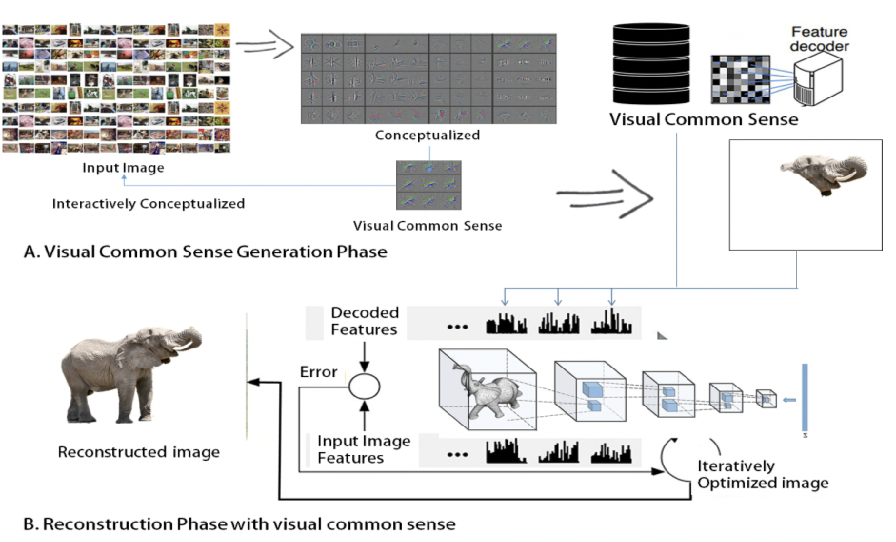

자기지도 학습에 의한 시각적 상식으로 영상에서 보이지 않는 부분을 복원하는 기술

연구내용
o [시각적 중첩/누적을 통한 전체 영상 외형 복원 기술] 자기지도 학습에 기반한 영상 정보의 주입 없이 사물의 변형 가능한 구조를 더한 상식 범위 내의 영상 외형 복원
o [사물의 기능, 의도, 인과성을 통한 시각적 상식화 기술] 사물의 기본 형태에서 벗어나 기능, 의도, 인과성의 상식화를 통한 사물의 보이지 않는 부분을 추론
o [시각적 상식 기반으로 사물의 영상 형상/구조 및 색상을 복원하는 기술] 시각적 상식을 통해 사물의 ‘무엇’, ‘어디’, ‘왜’, ‘어떻게’에 대한 추론을 통한 영상 복원
o [복원된 사물의 영상 정보를 활용하여 관계에 기반한 연상(추론) 기술] 사물의 영상 형태, 구조 정보를 통해 시각적 정보를 유추하여 결합 및 추론하는 인식 기술